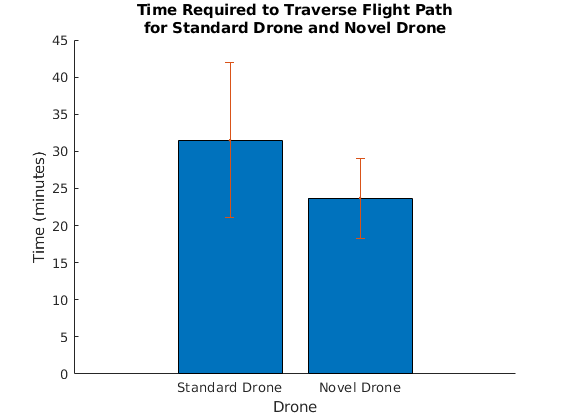
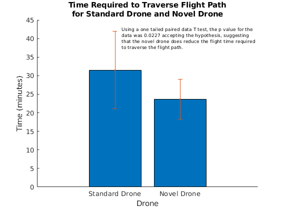

Contents
ES100 Stats HW Problem 3, Nick Pham
data = [21 13;
20 24;
12 28;
38 23;
31 21;
38 29;
39 32;
35 23;
36 19;
45 25];
Part 1
data_mean = mean(data)
data_std = std(data)
data_mean =
31.5000 23.7000
data_std =
10.4270 5.3965
Part 2
[h p] = ttest(data(:,1), data(:,2), 'Tail', 'right')
fprintf(['Because there are two datasets of equal length, a T test is\n', ...
'applicable. This is a one tailed T test because the hypothesis\n', ...
'is just that the novel drone reduces the flight time compared to\n',...
'a standard drone. The data is paired based on the conditions on\n', ...
'different days. Running the ttest gives supports a valid hypothesis\n',...
'with a p value of %1.4f, indicating that there is a significant\n'...
'statistical difference between the two datasets. As the mean of\n',...
'the novel drone''s flight time was less than that of the standard\n',...
'drone, the hypothesis is correct.\n\n'], p);
h =
1
p =
0.0227
Because there are two datasets of equal length, a T test is
applicable. This is a one tailed T test because the hypothesis
is just that the novel drone reduces the flight time compared to
a standard drone. The data is paired based on the conditions on
different days. Running the ttest gives supports a valid hypothesis
with a p value of 0.0227, indicating that there is a significant
statistical difference between the two datasets. As the mean of
the novel drone's flight time was less than that of the standard
drone, the hypothesis is correct.
Part 3
fprintf(['The following figure shows the average required time to traverse\n',...
'the flight path for the two drones. The T test performed in Part\n',...
'(2) confirmed that there is a statistical difference between the\n',...
'required time of the two drones.']);
figure(1); clf;
hold on;
names = {'Standard Drone'; 'Novel Drone'};
bar(data_mean)
errorbar(data_mean, data_std, '.')
set(gca, 'XTickLabel',names, 'XTick',1:2)
title({'Time Required to Traverse Flight Path','for Standard Drone and Novel Drone'})
xlabel('Drone')
ylabel('Time (minutes)')
hold off;
The following figure shows the average required time to traverse
the flight path for the two drones. The T test performed in Part
(2) confirmed that there is a statistical difference between the
required time of the two drones.

Part 4
figure(1)
hold on
str = sprintf(['Using a one tailed paired data T test, the p value for the\n',...
'data was %1.4f accepting the hypothesis, suggesting\n',...
'that the novel drone does reduce the flight time required\n',...
'to traverse the flight path.'], p);
text(1.1, 40, str, 'FontSize', 7);
hold off
